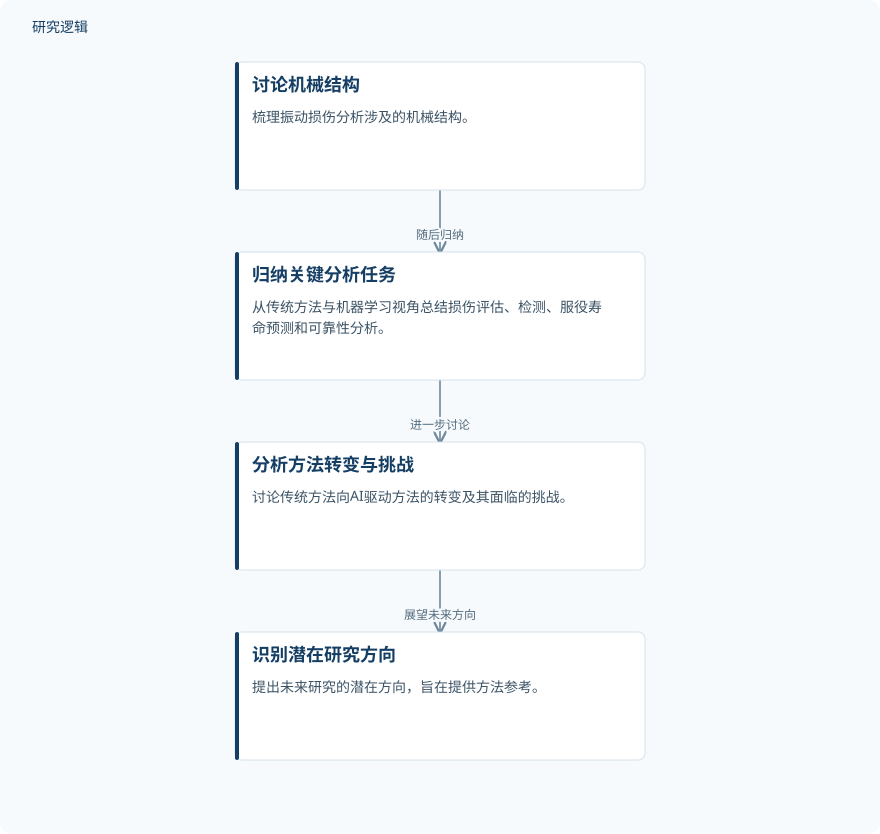

摘要解读
人工智能用于机械结构振动疲劳分析：趋势、挑战与未来机遇
Vibration fatigue analysis in mechanical structures using AI: Trends, challenges, and future opportunities
解读更新 2026-11-10 14:03 · 依据公开摘要整理，未核验全文细节
风浪引起的复杂振动会让海洋工程等领域的机械设备持续积累疲劳损伤。AI能如何参与损伤分析，又应如何理解它与传统方法的关系？这篇综述围绕分析对象、关键任务和方法转变组织研究进展，为阅读振动疲劳与智能分析文献提供线索。
文章目录
从风浪振动到设备疲劳安全
机械设备在服役期间承受复杂振动载荷，疲劳损伤的累积会威胁设备安全。因此，振动疲劳损伤分析不仅涉及损伤本身，也关系到设备服役安全。摘要以海洋工程等应用领域为背景，强调了这一问题的实际意义。
随着AI发展，损伤分析出现了新的解决思路。本文回应的需求是系统梳理已有方法，而不是在摘要中提出并验证一种新的预测模型。理解其综述定位，是把握文章价值的前提。
按分析对象与任务梳理传统方法和机器学习
摘要明确的梳理顺序是：先讨论振动损伤分析涉及的机械结构，再从传统方法和机器学习两个视角，总结损伤评估、损伤检测、服役寿命预测及可靠性分析的相关研究；最后讨论向AI驱动方法转变的过程、面临的挑战及潜在研究方向。
这一组织方式同时关注“分析什么结构”“解决什么任务”和“采用什么方法”。但摘要没有交代文献检索、筛选与质量评价流程，因此不能据此将其认定为遵循特定规范的系统性综述。
依据摘要整理的综述组织示意


概括摘要明确陈述的文献梳理顺序，不代表实验流程，也不是论文原图。
下载 SVG图示关系说明
实线表示相邻阶段的信息流，虚线表示跨阶段联系或反馈。
讨论机械结构 → 归纳关键分析任务：随后归纳；归纳关键分析任务 → 分析方法转变与挑战：进一步讨论；分析方法转变与挑战 → 识别潜在研究方向：展望未来方向
摘要呈现方法梳理，未给出性能优劣结论
摘要报告的主要成果是对相关研究进展的归纳，以及对传统方法向AI驱动方法转变、相关挑战和未来方向的讨论。它没有列出具体算法的比较结果，也没有报告预测误差、检测表现或可靠性估计的量化改善。
作者强调AI推动传统方法向智能分析演进的潜力，并希望为海洋工程等领域的方法发展提供参考。这里的表述属于综述的目标与潜在价值，不能解读为AI已在这些场景中获得全面验证或普遍优于传统方法。
具体证据覆盖范围仍需查阅全文
仅凭摘要，无法判断纳入研究的样本来源、结构类型分布、载荷条件、比较基线，以及实验或工程验证范围；也无法确认哪些挑战和未来方向得到了重点讨论。这些是当前资料无法回答的问题，并不意味着论文没有涉及相应内容。
阅读启发：先区分任务，再理解AI的作用
阅读启发：面向智能运维与疲劳可靠性，可沿着损伤评估、损伤检测、寿命预测和可靠性分析这些任务继续阅读，关注各任务中传统方法与机器学习分别承担什么角色，以及作者如何界定方法转变的挑战。比起笼统追问AI是否更好，先弄清比较对象与证据适用范围更有助于理解这篇综述。
以上为本站阅读启发与建议，不是论文已验证的结论。